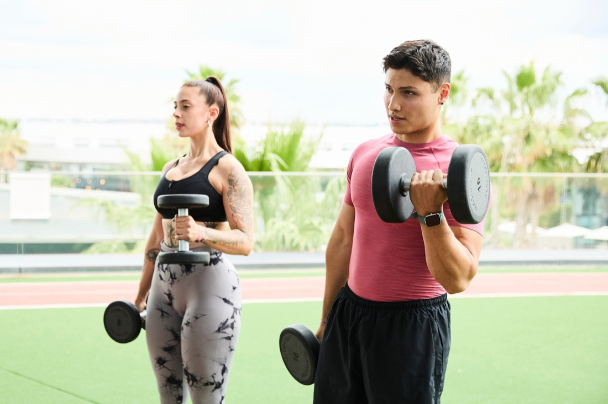
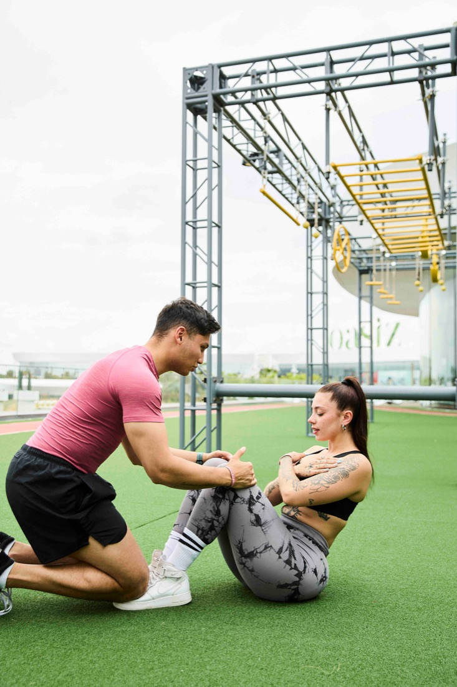
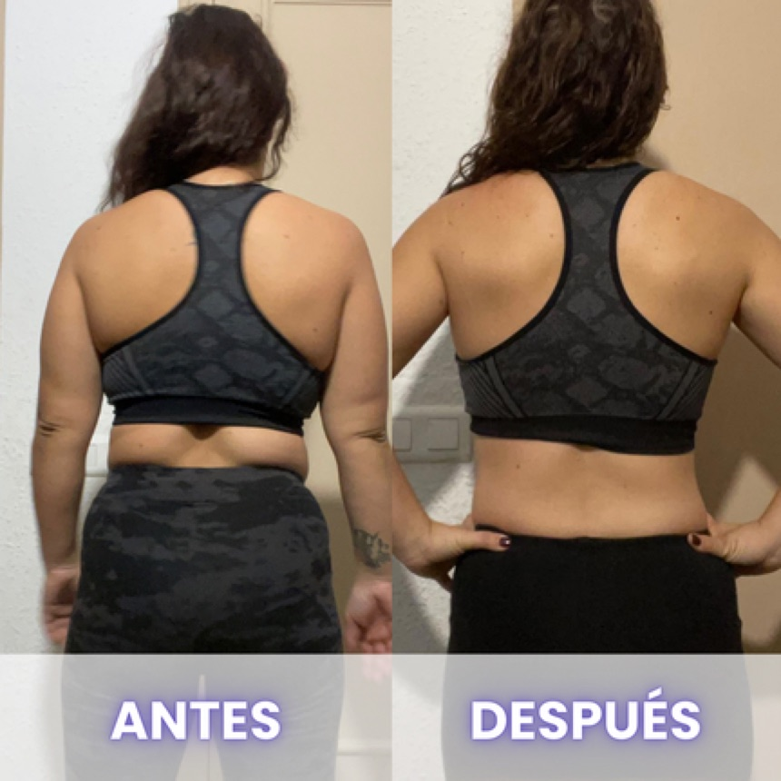
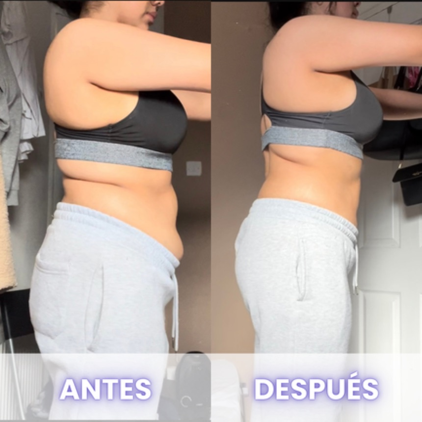
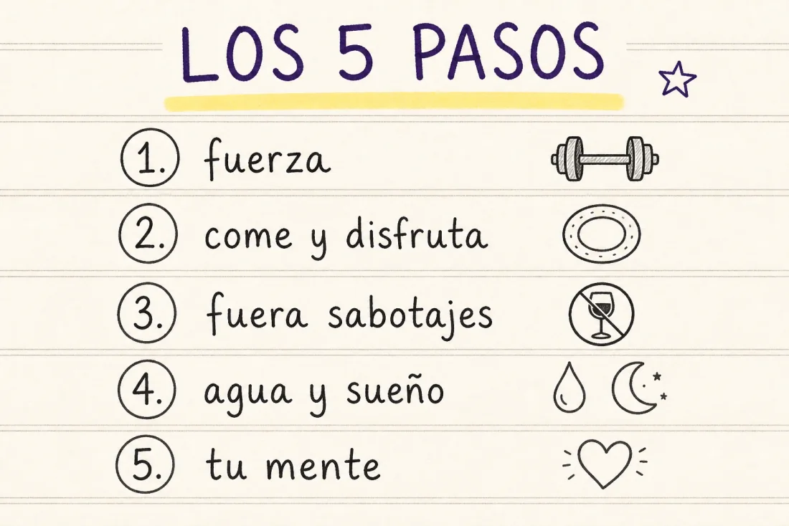
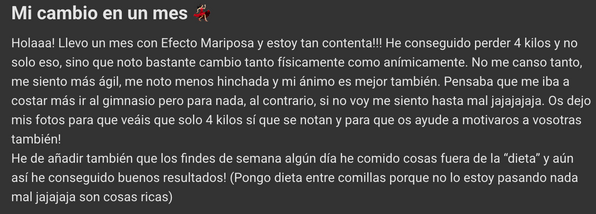
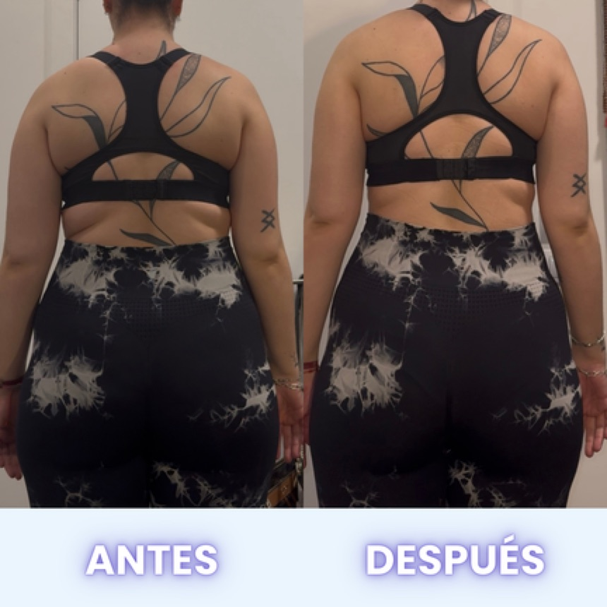
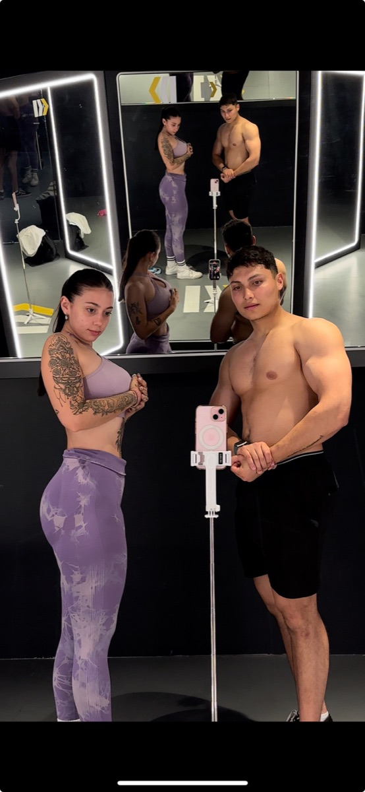
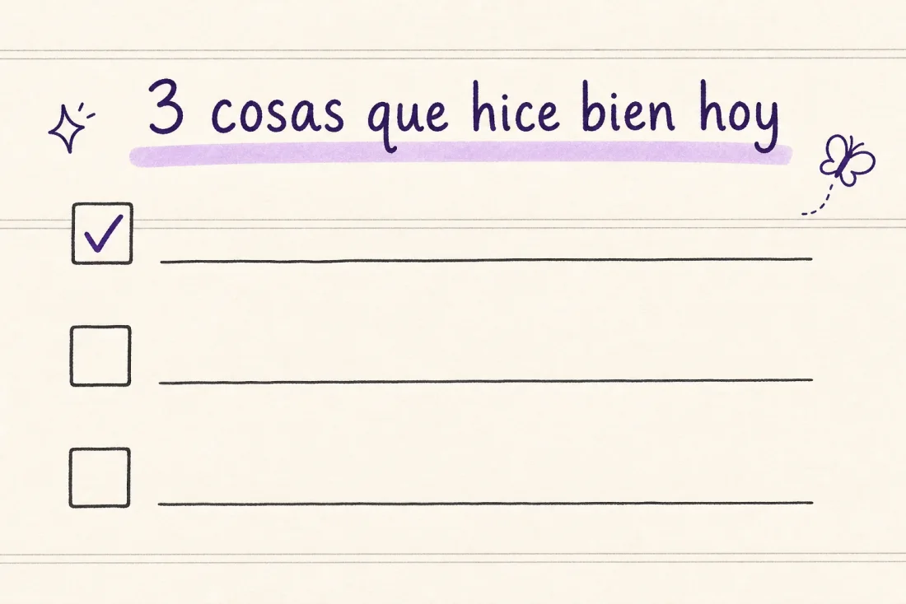
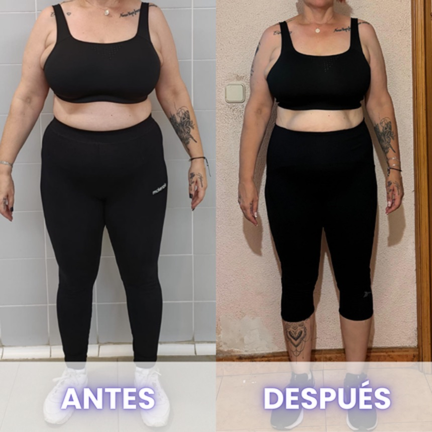

Por esta razón sigues teniendo barriga
Aprende a quitártela sin obsesionarte, sin trucos raros y sin dejar de comer lo que te gusta.

Antes de empezar... sé honesta contigo misma
Sé lo que estás sintiendo.
SÉ LO QUE ES MIRARTE AL ESPEJO, EMPUJAR LA BARRIGA CON LAS MANOS Y LEVANTARTE LA CAMISETA A SOLAS EN EL BAÑO para ver si ha bajado... aunque sea un poco.
Yo también lo intenté todo. Cardio infinito. Dietas sin sabor. Batidos asquerosos. Pasar hambre. ¿Y sabes qué? No funcionaba. Al menos no de verdad. Adelgazaba unos días... y volvía a caer. El cuerpo me pedía más, pero la cabeza ya estaba agotada.
Por eso escribí esto para ti. Para que tengas una guía real. Una de verdad. Nada de atajos ni productos mágicos. Sino lo que FUNCIONA.
Aquí dentro vas a encontrar pasos simples que puedes aplicar esta misma semana. Sí, como lo lees. Empiezas hoy, y en unos días ya notas que algo está cambiando.
Y no, no necesitas dejar de comer lo que te gusta, ni vivir en el gimnasio. Solo necesitas enfoque, constancia... y alguien que te acompañe. Pero eso lo hablamos al final 😉
🔍 Test rápido
Marca lo que más te represente (puedes tocar cada casilla):
¿Cuándo podrás aplicar esto?
Desde ya. Esta guía no es para «leer y dejar para luego». Está pensada para que esta misma semana hagas los primeros cambios y veas resultados. QUEREMOS QUE ENTRES EN MOVIMIENTO, porque si te quedas esperando el momento perfecto... nunca llega.
Aquí te vamos a contar cómo dejar de procrastinar y cómo perder esa barriga con pasos que no te saturen, que no te aburran, y que realmente funcionen.

Resultados reales, mujeres reales
Mira lo que han conseguido otras mujeres como tú. Mujeres que estaban cansadas, inseguras, perdidas... y que simplemente decidieron intentarlo una vez más. Con el enfoque correcto.
🌟 «Me he quedado loca con cómo he conseguido bajar 5 kg quitándome la barriga y los rollitos de la espalda, ¡y encima comiendo de todo! Antes era inimaginable, hasta que conocí a Ashley y Diego. Después me di cuenta de que, casi comiendo más que antes, tuve estos increíbles resultados... ¡y rápidos!»
Sonia, 35 años

🌟 «Llevo 1 mes y ya noto la barriga más plana. Lo mejor es que no siento que esté a dieta. Me siento libre.»
Giselle, 19 años

y si quieres ver más historias reales, tienes muchos más testimonios en nuestras destacadas de instagram 🔎
✋ Los 5 pasos para eliminar barriga sin obsesionarte
Aquí no hay trucos raros. NO TE VOY A DECIR QUE DEJES DE COMER PAN NI QUE CORRAS 10 KM. Te voy a dar 5 pasos que puedes empezar mañana mismo. Y si los haces bien, tu cuerpo va a empezar a responder. Te lo aseguro.

aquí va un dibujito a mano ✏️barriga-los-5-pasos.webp
PASO 1 · Entrena con fuerza, no con miedo 🏋️♀️
A ver... sé que suena intimidante eso del «entrenamiento de fuerza». Yo también pensaba que era solo para gente súper fit. Pero escúchame: si quieres perder barriga de verdad, este es el camino.
No se trata de pasar horas sudando en la elíptica. Se trata de activar tu cuerpo de verdad. Cuando haces fuerza, tu metabolismo se acelera, quemas más grasa (incluso cuando estás sentada) y tu cuerpo empieza a cambiar desde dentro.
¿Qué puedes hacer ya?
- Sentadillas con peso (3x10)
- Press de pecho en máquina (3x10)
- Remo (3x10)
- Plancha 30 segundos
- Elevaciones de piernas (3x12)
No necesitas ser experta ni estar súper en forma para empezar, tampoco tirarte muchas horas en el gimnasio. Solo necesitas atreverte. Y si te da miedo hacerlo sola, no te preocupes: por eso creamos el Método QSA+. Porque acompañada se avanza mucho más rápido... y con menos miedo.
PASO 2 · Come bien, pero sin dejar de disfrutar 🍳
¿Te cuento un secreto? NINGUNA DE LAS CHICAS QUE HA PERDIDO 12 KG CON NOSOTRAS ESTABA A DIETA.
De hecho, en Efecto Mariposa odiamos la palabra «dieta». Porque nadie puede sostener eso toda la vida. Y tú no estás aquí para sufrir, estás aquí para transformarte.
Comer rico y perder barriga sí se puede. El truco está en el equilibrio: comer comida real, aprender a combinar bien tus platos y dejar espacio para los antojos, sin culpa.
Ejemplos reales que funcionan:
- Desayuno: tostadas con aguacate y huevo pochado
- Almuerzo: pollo a la plancha con spaghetti y verduritas
- Cena: salmón con boniato y espárragos
- Capricho dulce: brownie de plátano con cacao (te paso la receta si me la pides 👀)
Lo importante es que aprendas a comer sin miedo y sin sentirte esclava de nada. Y sí, hacerlo sola puede ser un caos. Por eso nuestras chicas tienen menús adaptados a su vida, para que disfruten, coman fuera si quieren, y aun así bajen peso. Como hizo Arancha, que ya lleva 4 kg menos y comiendo más rico que nunca.
EJEMPLO REAL 💜
Palabras textuales de Arancha dentro de la comunidad:


4 kilos en un mes, comiendo cosas ricas jajaja (palabras suyas) ✨
PASO 3 · Elimina los sabotajes silenciosos 🕵️♀️
No te pasa solo a ti. Muchas de las que llegan a nosotras se sienten bloqueadas y no saben por qué. Y suele haber un patrón: los hábitos invisibles que sabotean todo.
Comer con ansiedad, picar entre horas, tomar «una copita» cada día, dormir mal... son cosas pequeñitas que, sumadas, frenan tu progreso aunque estés haciendo «todo bien».
¿Qué puedes empezar a cambiar?
- Planifica tus comidas: así evitas el picoteo por estrés
- Come sin pantallas (sí, nada de Netflix mientras comes)
- Bebe más agua (2 litros al día)
- Cambia el alcohol por infusiones ricas o agua con fruta
Esto marca más diferencia de la que imaginas. Y si te cuesta implementarlo, tranquila: no tienes por qué hacerlo sola. Es más fácil cuando alguien te lo recuerda, te da ideas y está ahí cuando lo necesitas.
PASO 4 · Hidrátate, duerme y reduce la inflamación 💧
A veces esa barriga que ves no es grasa, es hinchazón. Y eso se puede cambiar mucho más rápido de lo que crees si haces lo correcto: hidratarte, descansar y calmar tu sistema nervioso.
Sí, sé que suena «muy básico». Pero créeme: CUANDO EL CUERPO ESTÁ ESTRESADO Y AGOTADO, NO QUEMA NADA. SE BLOQUEA.
Cosas súper simples que puedes hacer:
- Beber 2 litros de agua con limón, pepino o menta
- Dormir mínimo 7 horas
- Hacer una pausa diaria para desconectar de verdad
- Caminar 20-30 minutos al aire libre, sin móvil
parece poco, pero esto deshincha, regula tus hormonas y te hace sentir mejor casi de inmediato. y si lo combinas con los pasos anteriores... BOOM. el cambio llega ✨

PASO 5 · Cambia tu mente y cambiará tu cuerpo 🧠
Te lo digo como alguien que ha estado en tu lugar: la cabeza es lo que más pesa cuando estás tratando de cambiar.
Si tú misma te saboteas con pensamientos del tipo «otra vez estoy fallando», «esto no es para mí», «no tengo fuerza de voluntad»... entonces vas a acabar abandonando.
La transformación real empieza por dentro. Y si aprendes a hablarte con más cariño y enfoque, tu cuerpo va detrás.
¿Cómo empezar?
- Escribe en un cuaderno 3 cosas que hiciste bien hoy
- Visualiza tu objetivo: cómo quieres verte, sentirte y vestirte
- Recuerda por qué empezaste cada vez que te quieras rendir

aquí va un dibujito a mano ✏️barriga-mente-cuaderno.webp
Y si no sabes por dónde tirar, en el Método QSA+ te damos herramientas para entrenar tu mente cada semana. Porque sin una mentalidad fuerte, todo lo demás se cae.
😔 ¿Y si lo intentas sola?
Sé que puedes hacerlo. Pero también sé, porque lo viví en carne propia, que cuando lo haces sin guía... acabas frustrada.
Te quedas sin saber si lo haces bien, empiezas a perder ritmo, y un día... lo dejas.
Por eso existe Efecto Mariposa. Porque con nosotros no estás sola. Te guiamos, te motivamos, te corregimos, te acompañamos.
Así pasó con Susana. A ella no le tuvimos que devolver nada, porque lo consiguió después de haberlo intentado durante más de 10 años. Te lo enseño:

🎁 Tu regalo por haber llegado hasta aquí
Por eso queremos premiarte con algo único: acceso exclusivo por solo 11€ (solo por haber terminado esta guía, ni nuestras alumnas lo tienen a este precio).
Incluye:
- Mini curso con IA para convertir recetas de redes en parte de tu plan, diseñar tu menú perfecto según tus gustos y comer fuera sin miedo a «romper la dieta»
- Recetas adaptadas 🍽️
- Feedback privado por WhatsApp 📲
- Entrenamiento de gimnasio exclusivo: la rutina que usamos con más de 100 mujeres para eliminar barriga de forma real y duradera 🏋️♀️
Quiero mi acceso por 11€ 🎁
una vez hecho el pago, te contactamos en menos de 24h con todos los accesos ✨
Si ni por 11€ estás dispuesta a dejar de frustrarte con la comida y empezar a disfrutar mientras cambias tu cuerpo... entonces quizá no estás lista para cambiar. Pero si sí lo estás, este es tu siguiente paso.

¿Quieres que lo hagamos juntas?
Si quieres saber cómo lo hemos hecho con cientos de mujeres que estaban justo donde estás tú hoy, perdiendo grasa comiendo lo que les gusta, sin pasar hambre y sin volver a recuperarlo, escríbeme por Instagram y te lo cuento sin compromiso.
Te enseño por dentro cómo trabajamos: nutrición flexible (sí, con tu comida favorita), entrenamiento a tu ritmo y la parte emocional, con todo el acompañamiento y de la mano. Y vemos juntas si es para ti.
Escríbeme por Instagram 💜mándame un dm a @ashleey.fit y dime «quiero saber más»
y vamos a por tu cambio al 100%. un abrazo, Ashley ✨